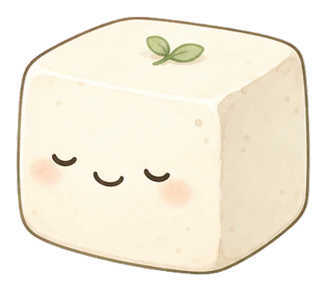
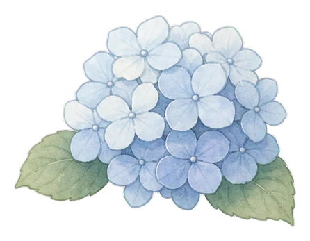

小屋へ戻る
雨宿りのひと勝負
おとうふ
等分帖
ぼんやり過ごす雨の午後。
やわらかなお豆腐を、できるだけ同じ大きさに切り分けてみましょう。
何本でも
切れ目は自由に追加
端から端へ
指で線を引くだけ
全6問
形も数も少しずつ変化
誤差が小さいほど
高得点になります
のんびり始める
ROUND 1 / 6
2等分にする
累計
0
/ 600
線を消す
できあがり

100
点
切り直す
次のお豆腐へ

TODAY'S TOFU RECORD
雨音の等分名人
500
/ 600点
もう一度、のんびり